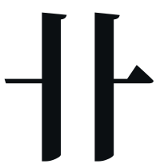
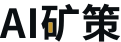

AI矿策 · LOGO 第三轮：卝
向国际矿业巨头学做法：寓意来自名字与历史；只用一个能占为己有的颜色；主标识平涂，安全帽、矿车、印刷品上都能用；字标往往比图形更长寿；几十年不变。文化锚点是“卝”，它是“礦（矿）”的古字。
向矿业巨头学什么（只写可核实的事实，不展示对方标识）
| 力拓 Rio Tinto | 名字意为“红河”；1873 年起家于收购西班牙韦尔瓦省的古铜矿；标识以红色为主 | 名字背后有矿业历史，颜色有出处 |
|---|---|---|
| 必和必拓 BHP | 2017 年去掉 Billiton，回到几代人熟悉的老名字；改用粗体大写字标，橙色沿用 2001 年的标识 | 传承胜过求新；字标为主 |
| 淡水河谷 Vale | 2007 年起用 Vale 这个名字；标识为 V 形，配绿色与黄色 | 一个符号加国家色彩 |
| 艾芬豪 Ivanhoe | 母公司标识未找到官方释义；合资公司卡莫阿铜业 2021 年的标识中，底部是矿石堆，K 的尾笔呼应汉字“人”，红色取自三国国旗 | 图形里可以叠几层文化含义 |
| 紫金矿业、中国五矿 | 未查到官方的标识释义 | 只作参考 |
寓意来自名字与历史一个能占为己有的颜色主标平涂字标长寿几十年不变
资料来源：维基百科、Fox Business、Engineering News 等公开报道（2026-11-04 检索）。
文化锚点：卝

《说文解字》：“卝，古文礦。《周禮》有卝人。”
《周礼·地官》：“卝人，掌金玉锡石之地，而为之厉禁以守之。”
郑玄注：“金玉未成器曰礦。”引文经汉典（zdic）转引核对，正式使用前再对照原典。
三千年前，“卝人”就是专门看守矿产之地的官员。AI矿策替读者看守全球矿产与矿业法规的变化，正是今天的卝人。字形上，两笔竖画贯穿上下，左右各伸出一短横，像地面被一口竖井穿透，天然就是一口矿井。
Seal
App · 朱砂 App · 测量桩橙 单色黑 单色白 32 16
卝 · 朱印
一方朱砂印，白文“卝”。朱砂是矿物，自古做印泥；印章代表信用与背书，正是资讯服务的根本。“卝人”是《周礼》中掌管矿产之地的官职，AI矿策就是今天的卝人。
Shaft
App · 朱砂 
App · 测量桩橙 单色黑 单色白 32 16
卝 · 矿井
把“卝”读作地面线被一口竖井穿透：两笔竖画是井壁，两笔短横是地表，井底是一枚金锭。意思是向下深挖，把价值带上来。
Bronze
App · 朱砂 
App · 测量桩橙 单色黑 单色白 32 16
卝 · 金文
用青铜铭文的笔意写“卝”：笔画中间饱满、两端收尖，带着三千年的青铜气质，同时足够简洁，可以做现代图标。
WORDMARK
字标优先
学必和必拓、力拓，以字标为主：“矿”字里“石”的“口”中放一枚金块，在文字里藏下矿；配字距拉开的英文大写和一枚小朱印。

主色二选一（辅色：平涂金 #C8992E，深墨底 #0B0F12）
朱砂
#C2381F朱砂（硫化汞）本身是一种矿物，自古用来做印泥，有中国文化底蕴，也有“盖章背书”的意思。选它的话，方向 C 的强调色统一改为朱砂。
测量桩橙
#E8590C沿用方向 C 现在的强调色，取自勘探现场的测量桩，更有现代工业感。
浏览器标签页 · 手机桌面
AI矿策 — 全球矿业资讯卝·朱印
AI矿策 — 全球矿业资讯朱印·橙
AI矿策 — 全球矿业资讯卝·矿井
AI矿策 — 全球矿业资讯卝·金文
日报刊头 · 名片
矿业日报
2026-11-04
2026-11-04
全球矿业资讯 · 中文阅读，原文可查
aiminingpolicy.com
安全帽贴标
主标识用平涂，贴在安全帽、矿车、工装上依然清楚，这是矿业品牌必须过的一关。